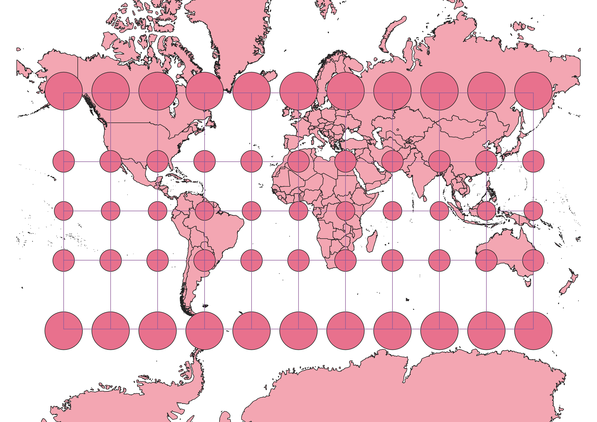
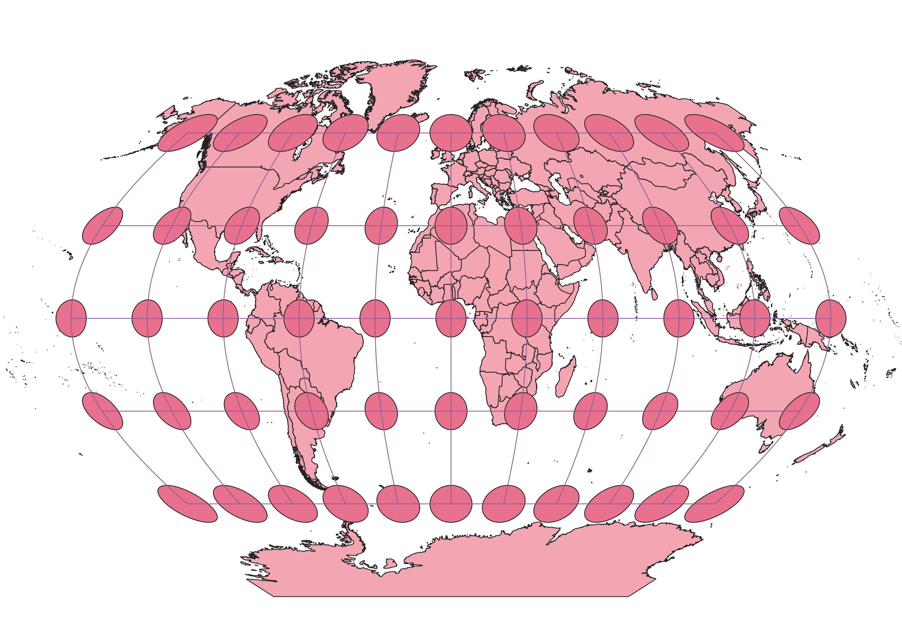
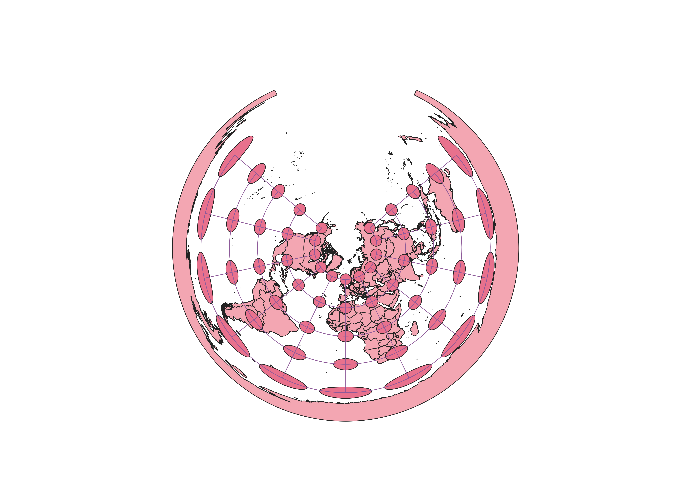
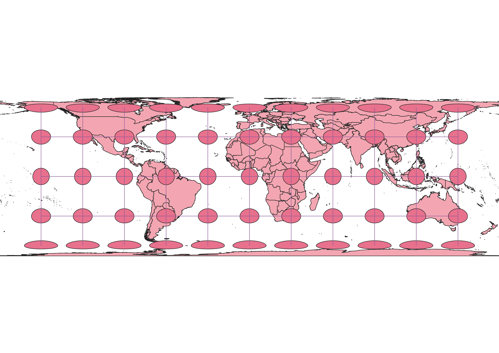
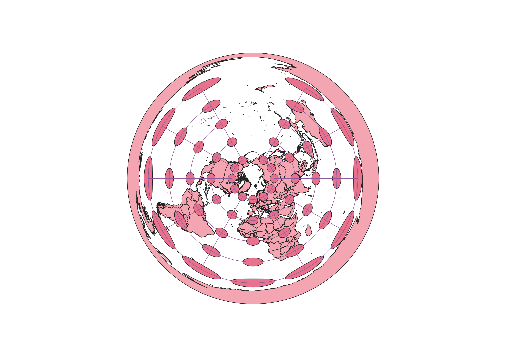
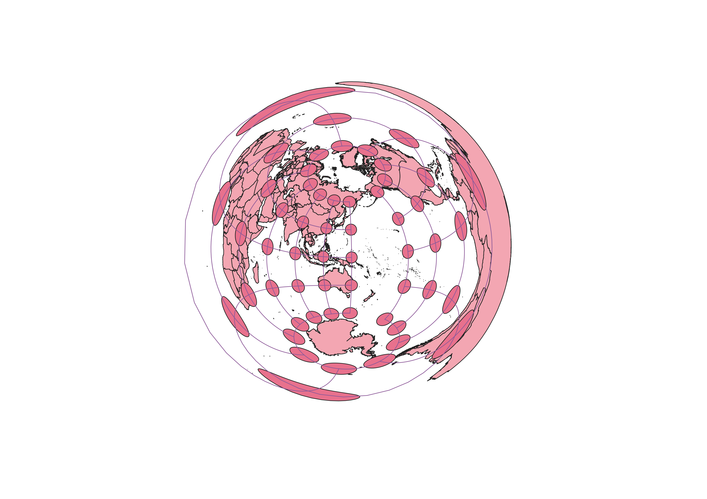
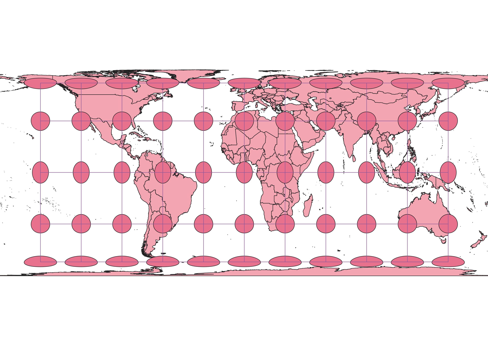

In this project I learned how to display images in different projections
Describe in your own words how you displayed the map in different projections using QGIS
To display the map in different projections, I used the projection button on the bottom right to search for different projections.
From there, I simply clicked on each projection I wanted to use.
WGS84 Projection
In this map, the shape and area of the indicator circles is accurate near the equator, but it worsens as the longitude gets further from zero. This map preserves distance well.

Aitoff Projection
This map also preserves shape and distance well near the equator, but fails to do so as the longitude gets further from zero. However, this one is skewed vertically instead of horizontally.

Now, you should add the following projections on your own:
EPSG: 3857, 53018, 54034, 54027, 102016, and two additional projections that you choose.
Data used for this project
Download Natrual Earth 1:10m Cultural Vector
EPSG 3857 Projection
This map is similar to the first two in how it is the most accurate close to the equator, but this one distorts evenly horizontally and vertically.

EPSG 53018 Projection
This map skews distance and size some, but it skews size much less than the previous projections because the projection itself is an oval.

EPSG 54027 Projection
This projects Earth similar to a pancake, which keeps everything well positioned from the persepctive of the North Pole, but it's distorted horizontally almost everywhere except the second and third rows of dots. The Pacific Ocean is also massive.

EPSG 54034 Projection
This map preserves longitude almost perfectly, but skews the latitude worse and worse as latitude expands in either direction from zero.

EPSG 102016 Projection
This map projects Earth like a pancake similar to EPSG 54027. However, this projection fixed the Pacific Ocean problem at the cost of further skewing horizontal distance.

EPSG 102239 Projection
This projection is very interesting. It centers around the North Pola and Australia, distorting latitude and longitude severely, but evenly. This projection appears to have been created to make Africa seem as large as possible.

EPSG 102239 Projection
This projection is my personal favorite. It preserves longitude in all latitudes, and keeps the first row of dots above and below the equator ones undistorted. This not only keeps where I live undistorted, but it minimizes distortion globally. Distortion is vertical at the equator, but horizontal near the poles.
